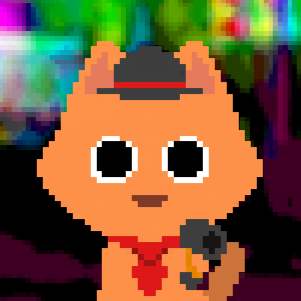

Miscellany
Various side-projects

Catsino Crawler
Gambling ruins lives. In your case, gambling ruined eight of them!
Play as One-Life-Louie, a down-on-their-luck cat whose lives were stolen by the nefarious Dog Mafia.
This top-down shooter/dungeon-crawler hybrid features 3 different levels inspired by casino layouts, an upgradable gun that shoots dice that deal random damage, fine-tuned movement including dashing, and bullet-hell style enemies and bosses. Inspirations include The Binding of Isaac: Rebirth (Edmund McMillen, 2014), Enter The Gungeon (Dodge Roll, 2016), and Hades (Supergiant Games, 2018).
Final project for FMST 036: Theory and History of Video Games at Swarthmore College in Spring, 2024.
View